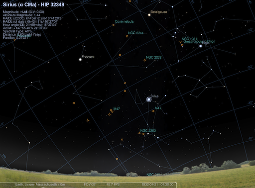
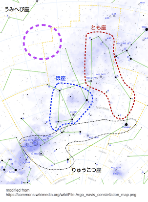

夢が熱を運んだか、熱が夢を生んだのか、ウォルター・ギルマンには判らなかった。全ての背後に蹲るのは古い街の薄気味悪く膿んだ恐怖、黴臭く不浄な屋根裏部屋の破風に纏わる恐怖だった。そんな屋根裏部屋で彼は書き物をし、研究し、図と公式に取り組み、さもなければ粗末な鉄のベッドに身を放り込んでいたのだ。彼の耳は超自然的に、堪え難い程にまで鋭敏になっていき、随分前から安物の置時計を止めていた。時を刻む音ですら砲撃の轟音並に聞こえるようになっていたからだ。夜になると、外に広がる暗黒の都市の微かな物音、虫に食われた仕切り板をトコトコ走るドブネズミの邪悪な足音、世紀を重ねた家の隠れた梁が立てる軋み、もうそれだけで彼は耳障りな音の汎魔殿に居るような気になってしまった。暗闇は説明のつかない音で常に満たされ――彼はいつか今聞こえている騒音がおさまり、その背後に蠢くやも知れぬ、より密やかな物音が聞こえてきはしまいかと折々身を震わせていたのだ。
彼は変わることのない、伝説に取り憑かれた都市アーカムに住んでいた。集蔟するギャンブレル屋根は傾きこの州のかつての暗黒時代に魔女が王の官吏から身を隠した屋根裏へと落ち込んでいた。そんな街の中でも彼が寝泊まりしていた破風の部屋ほど
多分ギルマンはあんなに猛勉強してはいけなかったのだ。非ユークリッド幾何学と量子物理学とくれば誰の脳髄だってパンパンに腫れ上がらすのに十分だし、それらを伝承と混ぜ合わせてゴチック物語や野蛮な炉端の囁きが仄めかす食屍鬼めいた何かの背後に異様な多次元的現実世界の痕跡を探ろうなどとしたら、精神を張りつめずにすむ訳がない。ヘーヴァリル(*1)出身のギルマンが己の数学研究と
彼は自分の部屋が古い魔女屋敷の中にあると知っていた――そう、だからそこを借りたのだ。ケザイア・メーソンの裁判についてはエセックス郡紀に多く記されており、刑事巡回裁判所に強いられて自白した内容は何故かおかしな位ギルマンを魅了した。彼女はハーソーン判事(*2)に、空間の壁をすり抜けその向こうにある他の空間を指して導きうる直線群と曲線群とのことを語り、それとなく、メドウ・ヒルの先にある暗い白石の谷や河中にある無人の島で開かれる深夜の集会の中で、この種の直線や曲線がしばしば用いられると仄めかした。彼女はまた黒の男のことを、自分の宣誓のことを、ナハブという自分の新しい秘密の名のことを語った。そして自分の牢屋の壁にそれらの線を描くと姿を消した。
ギルマンはケザイアに絡む奇妙な物事を信じていて、彼女の屋敷が二百七十五年以上を経た今も尚現存していることを知った時なにかぞくぞくするものを感じていた。彼は聞いてしまったのだ、ケザイアがその古い屋敷と狭い街路でしぶとく存在し続けているとか、おかしな人間の歯形がその屋敷や他の古屋敷で寝ていた人についたとか、五月祭の前夜や万聖節が近づくと子供のものらしい叫びが聞こえるとか、そんな恐怖の時期の直後にこの古屋敷の屋根裏からしばしば異臭がするとか、夜明け前の真っ暗な時間帯に、小振りで鋭い歯を持つ毛皮で覆われた何かがこの黴だらけの建物や街に出没して、興味ありげに住民たちの間に鼻を突っ込むとか。こういう囁きを耳にした彼は何が何でもここに住もうと決意した。その屋敷は不人気でほとんど借り手がつかず、長いこと貧乏下宿となっていたため、部屋をおさえるのは簡単だった。そこで何を見つけられると期待しているのかギルマンにも判らなかったが、その建物に住みたいということは判っていた。そこにある何らかの状況によって、十七世紀の月並みな老女が大なり小なり突然に現代の碩学たるプランク、ハイゼンベルク、アインシュタイン、及びジッターを越えるであろう深みに及ぶ数学的な洞察を得た場所なのだから。
彼は秘密のシンボルの痕跡がないものかと壁紙が剥がれた部分の漆喰の壁と材木を隅から隅まで探索し、首尾よく一週間の内に、東側の屋根裏部屋こそケザイアが魔術の実践のために用いていた場所だとつきとめた。そこは最初から空室だったが――長期間住もうとするような借り主が一人もいなかったからだ――ポーランド人の大家はそれを貸出すことに警戒心を募らせていた。それでも熱が出るまでギルマンの身には何一つおかしなことが起こらなかった。薄暗いホールや部屋を亡霊めいたケザイアが過ることも、高い所にある彼の陰気な巣にまで毛で覆われた小さな何かがよじ登り鼻を突っ込んでくることも、彼の飽くことのない探求に応えて魔女の呪文の記録が現れてくることもなかった。時折彼は黴臭く影に閉ざされた未舗装の裏通りを散歩してまわったものだった。その通りにはいつ建てられたかも判らぬ不気味な茶色の家々が傾ぎ崩れ、狭く小さな窓々から嘲笑の目を向けてくるのだ。ここではかつて異様な物事が起きたことを彼は知っており、一皮めくれば――少なくとも最も暗く、狭く、曲がりくねり縺れ合った路地には――醜怪な過去の全てが幽かな暗示となって生き残っているのである。彼はまた二度、悪評のたつ川中の島にボートを向け、いずくより来ったか、その起源が最早過去の闇の中に消えている苔むした灰色の立石群を見、それらの成す独特の角度をスケッチしてきた。
ギルマンの部屋はかなり大きかったにも拘らず、奇妙な不正形をしていた。北の壁は外壁側から室内側にくるに従って目に見えて内側へと傾いており、低い天井も同じ方向に沿って緩やかに下がっていた。はっきりしたネズミ穴が一つある他、塞いであるのもいくつかあって、傾斜した部屋の壁と建物の北側の真っすぐな外壁との間にあるはずの空間には入り口が――そのような通路の痕跡も――なく、そのくせ建物を外から見ると北側にも窓があり、遠い昔に板で塞いだことが判るのだ。天井の上のロフト――その床は傾いている(*3)はずなのだが――も同様に到達不能だった。梯子を上ってみると、蜘蛛の巣だらけの別な水平のロフトで、昔開口部だったところは古い厚板でぴったり覆われ、植民地時代の大工仕事でよく見るがっしりした木釘で打ち付けてあって、今や単なる遺物になっていた。けれども、いくら説得に努めても大家は表情を変えず、それら二つの閉鎖空間を調査させてはくれなかった。
次第次第に、彼は自分の部屋にある不正形の壁と天井とに惹き付けられていった。というのも彼はそれら奇矯な角度から、それらが持つ目的について解明するための糸口を与えてくれそうな数学的意味合いを読み取るようになっていたからだ。彼は、奇妙な角度を持つこの部屋に老女ケザイアが住んでいたことには大きな理由があったのではないかと考えた。我々の知る宇宙の境界を越えた外側に出る際、特定の角度を通っていたと彼女は主張してはいなかったか？ 彼の興味は傾斜面の彼方に広がる測鉛の届かぬ深淵から離れていった。今やそれらの面の持つ目的が、自分の住むこちら側に関係するものと認められたからだ。
二月初めに、脳炎(*4)の感触と夢とが始まった。明らかに、ギルマンの部屋の風変わりな角度がいつの間にか彼の上に異様な、ほとんど催眠的な効果を及ぼしていたのだ。荒涼たる冬が厳しさを増すにつれ、彼は下方に落ち込む天井と内側に倒れ込む壁との間の隅をますます見据えるようになっていく自分に気がついた。この頃になると通常の勉学に集中できなくなっており、それが大きな悩みとなっていた。これから迎える中間考査がひどく不安だったのだ。だが敏感過ぎる聴覚は遥かに悩ましかった。生活は絶え間なく続く堪え難い不協和音となり、その中には常に――恐らくは生命の向こう側の領域からやってくる――身も凍るような他の音の印象が――聞こえるか聞こえないかの境に――つきまとっていた。具体的なものに限って言えば、大昔の板材の内側でドブネズミがたてる騒音が最悪だった。その引っ掻く音には、人目を忍ぶ感じだけではなく時として何か熟慮を感じさせるものがあった。それが傾いた北の壁の向こうから聞こえてくる時は乾いたカタカタという音を伴い、それが天井の上の何世紀もの間閉鎖されたロフトから聞こえてくる時はいつも、彼を襲おうとする何かの恐るべきものがひたすら好機を窺ってでもいるかのようにギルマンは身構えた。
夢は到底健全とは言い兼ねるもので、ギルマンはそれらを数学と伝承を同時に研究した結果に違いないと感じていた。我々の知る三次元世界の彼方にあるはずだと自分自身の公式群が示す、かの不分明な領域のことや、実際にそれらの領域に至る門を老女ケザイア・メースンが――あらゆる推測を越えた何らかの感応力に導かれて――発見した件を余りに考えすぎていたのだ。彼女及び告発人の宣誓証言を含む黄変した州紀は人間の経験の埒外にある事物について忌々しい迄に示唆的であり――彼女の使い魔として働く、毛皮を纏った小さく俊敏な物体についての信じ難いほど詳細に及ぶ記述は苦痛を覚えるくらいに現実的だった。
その物体――大柄のドブネズミより大きくはなく、町人たちに「ブラウン・ジェンキン」という古風な名前で呼ばれていた――は顕著な共感性集団幻覚事件の賜物だった。一六九二年に十一名を下らない人々がそれを瞥見したと証言したからだ。近年でも噂はあり、当惑し不安を感じるほど互いに一致していた。証言によると、それは長髪のドブネズミの姿をしているが、鋭い歯をもつ顔は不吉にも人間の髭面で前脚は小さな人の手に似ているという。それは老女ケザイアと悪魔との間のメッセンジャーとして働き、吸血鬼のように魔女の血を啜って栄養としていた。その声は胸の悪くなるような一種のクスクス笑いで、あらゆる言語を話せた。ギルマンの夢に現れた醜怪なものの中でもこの冒
 的な小柄な間の子以上に彼を狼狽させ吐き気を催させるものはなかった。彼の幻想の中を縦横に飛び回るそのイメージは目覚めている間に古文書と現代の囁きから演繹した最悪のものに比べても千倍も不愉快だったのだ。
的な小柄な間の子以上に彼を狼狽させ吐き気を催させるものはなかった。彼の幻想の中を縦横に飛び回るそのイメージは目覚めている間に古文書と現代の囁きから演繹した最悪のものに比べても千倍も不愉快だったのだ。ギルマンの夢の大部分は不可解に彩られた黄昏と無茶苦茶に調子外れな音に満ちた果てしない深淵への突入で、その深淵の持つ質量及び重力作用に於ける特性について、また自分自身の実体との関係について、彼はなお解明の端緒にすら辿り着いていなかった。彼は歩くことも昇ることも、飛ぶことも泳ぐことも、這うことものたくることもできなかったものの、常に半ば随意的、半ば不随意的な一種の動きを体験していた。自分自身の状態に関してはまともな判断を下し兼ねた。腕、脚、胴体が見えそうになると何か異様な遠近感の混乱が起こるのだ。が、彼は感じていた。身体組織と機能とが何か驚くべきやり方で変容し、斜めに投影されている――そのくせ通常の体の比率と性質との間に醜悪な関係をとどめているのだと。
その深淵は決して空虚というわけではなく、異様な色彩と言語に絶する角度を持つ物質で満たされ、一部は有機体、一部は無機物に見えた。有機体の内で二、三のものは心の底にぼんやりした記憶を呼び起こしそうになるのだが、それらが嘲笑的に暗示したり類似したりしているものが何か、意識のレベルでは把握し得なかった。後の夢では有機体が幾つかのカテゴリーに分類できることが明らかになっていき、それぞれ根本的に行動様式や基本的な動機が異なる種族に対応しているようだった。これらのカテゴリーの中の一つは、他のカテゴリーに比べ非論理的で見当違いな動作が幾分少ない成員からなっているようだった。
あらゆる物体が――有機無機を問わず――全く以て言語に絶し理解不能だった。折りに触れてギルマンは無機物をプリズム、迷路、立方体と平面のクラスタ、キュクロプス式の建物になぞらえ、有機体からは、泡や鮹や百足やヒンドゥーの生ける偶像や蛇の如く縺れあうアラベスク模様の集合体という印象を受けた。見るもの全てが言いようもなく脅迫的で恐ろしく、動きからみてそれが有機体の一つだろうと気づく度に彼は混じりけのない恐るべき戦慄に襲われ、大抵はショックのために目を覚ましてしまうのだった。有機体がどのように動くかは自分が動く場合と同様に判らなかった。すぐに彼は更なる謎を見た――ある種の実体が何もないところから突然現れ、また同じ位突然に消えてしまうことがよくあるのだ。深淵全体を通じて金切り声を上げ吠えまくる混乱した音は、音程、音色、リズムといったアナリーゼを受け付けず、むしろ有機無機を問わず数限りない物体に起こるあらゆるぼんやりした視覚的変化との間に同期性を持っているようだった。その昏く不断にして不可避な動揺のどれか一つが堪え難い強度にまで高まってしまうのではないかという恐れをギルマンは常に抱いていた。
しかし、ブラウン・ジェンキンを目にするのはこれらの徹底して異界的な奔流の中ではなかった。そのショッキングで小柄な恐怖はより浅く明晰な夢の中で彼を待ち構え、夢の最深部へと落ちる寸前の所で襲いかかってきたのだ。幾世紀を経た部屋に淡い光がちらちらと揺らめき始め、菫色の霧となって、彼の頭脳をかくも狡猾に奪取し終えた角度を持つ平面間の交線を照らし出すと、彼は暗い闇の中で身を横たえながらなんとか目を覚ましていようと格闘したものだった。その恐怖の出所は隅のネズミ穴で、弛んだ広板張りの床をパタパタと駆け寄りながら、髭を生やした小さな人面顔に邪悪な期待を湛えていたのだが、有り難いことにこの夢はその物体が彼に鼻を突っ込める程近づく前に覚めるのが常だった。それには地獄のような長く尖った犬族の歯があり、ギルマンは毎日ネズミ穴を塞ごうと努めたが、夜になると決まってその板材に棲息する本来の住人どもがどんな障壁であろうと食い破ってしまうのだ。一度大家に頼んでブリキ板を釘で打ち付け穴を覆ってもらったことがある。ところが次の夜にはドブネズミどもが新しい穴を齧って開け、その際に奇妙な小骨片を部屋の中に押し出すか持ち込むかしていた。
ギルマンは熱のことを医者に言おうとはしなかった。試験に合格するためには一瞬たりともおろそかにできぬ今、大学の病院にでも押し込まれたらお仕舞いだと思ったからである。実のところ彼は学期末(*5)にあって解析学Ｄと上級一般心理学を落としており、まだ今なら失地を回復できるという一縷の想いで背水の陣を布いていたのだ。
寝入り端に見る夢の中に新たな要素が入ってきたのは三月のことで、ブラウン・ジェンキンの悪夢のような姿が星雲状の(*6)霞に伴われるようになり、この霞が次第に腰の曲がった老婆に似てきたのだ。加わってきたこの要素は思いがけず彼を不安にさせたが、最後は廃埠頭近くの入り組んだ暗い路地で二度、実際に出くわした婆さんに似ているのだと断定した。それらの折には、老婆が理由もなく向けてくる邪悪で冷酷な凝視を受けた彼は殆ど身震いする思いで――殊に初めてでっぷり太ったドブネズミが隣の裏通りの暗い入り口を駆け抜けていくのを見た時は、馬鹿げた話だがブラウン・ジェンキンのことを考えずにはいられなかった位だ。今では自分の歪んだ夢はこれらの神経質な恐れが反映して現れてくるのだと考えていた。古屋敷の齎す影響が不健全なものだという点は彼も否定し難く、だが初めの頃の病的な興味の残滓が尚も彼をそこに引き止めていた。毎夜の幻想は専ら発熱に起因するものであり、熱っぽい感じが無くなりさえすれば悍ましい幻影も消えるのだと彼は論じた。しかしながらそれらの幻影は生き生きとした説得力を獲得していき、目覚めるたびになんとなく、思い出せる以上にずっと大きな何かをしてしまっているのだという感じが残っていた。彼には恐ろしい確信があった。忘れてしまった夢の中でブラウン・ジェンキンと老婆の両方と話したことがあり、両者は更に高い能力をもつ第三の存在と会わせるため彼を何処かに連れて行くべく駆り立てているのだと。
三月も終わり頃になると、他の勉強がますます煩わしくなる一方で数学は上がり調子になっていった。リーマン方程式を解く直観的な要領を掴み始め、四次元その他の問題に関する理解力でアッパム教授を驚嘆させた。クラスの他の学生が軒並み叩きのめされた問題である。ある午後にはこんな議論があった。曰く、空間内に特定の奇怪な曲面が存在しうる件、また曰く、大宇宙の中の我々側の部分と、最遠の星々と同程度に離れた他の様々な諸領域あるいは諸銀河の狭間にある深淵とが接近し、あるいは場合によっては繋がってしまうはずの理論上の点について――それどころか、その繋がりは、途方も無く遠隔の地点へ、アインシュタイン的全時空連続体の彼方にあると躊躇いがちに想定される単位宇宙の群れと同じくらい遠くの地点へと結ぶのだ。これらのテーマについてのギルマンの水際立った扱いは他の者全ての賞賛の的となり、しかし一部には、彼の仮定的な描写が、神経の状態や孤独を好む傾向などを散々あげつらう原因ともなっていったのだ。学生たちが首を横に振ったのは、彼が真顔で、人は――人間には習得し難い程度ではあるにせよ、十分な数学的知識を持てば――この地上から宇宙の果てのいかなる特定の天体にでも脚を踏み入れることができるという説を持ち出した時である。
彼は言った、そのような一歩に必要なのは僅か二つの段階のみであろう。まず既知の三次元宇宙圏から抜け出し、次いでまたその宇宙圏に戻るのだが、その地点は果てしない遠方であってもよい。この転移は多くの場合生命を失うことなく達成できると考えられる。おそらくは、三次元空間のいかなる部分に住むいかなる存在であろうと四次元空間の中でも生存できる。第二段階で生き延びられるかは、再突入先として選択した三次元空間内の局所的な状況に依存するだろう。ある惑星の住民は他の惑星でも生存できるかもしれない――それが他の銀河系や他の時空連続体の中の類似した次元的位相に属する場合であっても――だが、数学的には極近接した宇宙同士であっても、互いの住民が生存できないような惑星の組み合わせは莫大な数にのぼるに相違ないのだ。
任意の次元領域に住む者が、付加的ないしは無限に重畳する未知の不可解な領域へ――問題の時空連続体の内部であろうと外部であろうと――生きたまま突入できるというのもまた同様にありうることであって、さらにその逆すらも真なのだ。推測ではあるが、任意の次元からより高次の地平に足を踏み入れる際に発生する変容によっても、我々の知る生物学的統一性が破壊されることはないと考え得る相応の根拠がある。最後の推測におけるギルマンの説明は然程はっきりしていなかったが、他の複雑な点における明解さがこの部分の不明瞭さを補って余りあった。彼の行う、高度な数学と魔術の特定の相との近縁性に関する論証は、アッパム教授を殊の外喜ばせた。そのような魔術は、言語に絶した時代を閲して、我々以上に大宇宙とその法則を知っていたものども――人類であれ、人類以前のものであれ――より伝承されてきたのである。
四月一日頃になると、ギルマンは微熱がひかないのを随分気にするようになった。また、下宿仲間が彼の夢中遊行について話すことにも心を乱された。彼はしばしばベッドから抜け出しているようで、下の階の部屋の住人が言うには真夜中に床が軋む音がするらしい。この男は夜になると靴音がするとも言っていたが、ギルマンにしてみればそれは間違いに決まっていた。朝になってみれば、他の衣服同様、靴もぴったり元通りの場所にあったからだ。この病的な古屋敷では、どんな種類の幻聴が聞こえてもおかしくはない――ギルマン自身、今や白昼ですら傾いた壁と天井の向こうにある黒き虚空からドブネズミがたてるゴソゴソいう音とは異なる物音が聞こえてくる気がしているではないか？ 病的に鋭敏になった耳は記録に無いほどの昔から封印されたままの頭上のロフトに幽かな足音がするのを聞き取れるようになっており、時としてそのような幻覚が痛ましいほど現実性を帯びていたのだ。
しかし、彼は自分が本当に夢遊病になってしまったということを知っていた。衣服が全てもとの場所にあったにも拘らず、部屋が空になっている事例を二度見られているからだ。これを請け合ったのは下宿仲間のフランク・エルウッドで、貧乏なせいでこんなに見窄らしく人気のない家に下宿せざるを得なかった。何時間も勉強していたエルウッドは微分方程式のことで助けを求めに上がってきたのだが、ギルマンは不在だった。ノックをしても返事がないのをみて、彼はぶしつけだとは思ったが鍵の掛かっていなかったドアを開けた。ひどく手助けが欲しかったのと、ちょっと揺すって起こしても部屋の住人が気にすることはないだろうと思ったからだった。しかしながらいずれの事例でも彼はおらず、そのことを告げられた時、裸足に寝間着という姿で自分はいったいどこをほっつき歩けたのだろうかと彼は不思議に思った。夢中遊行の報告が続くようならその件を調べようと決意し、自分の足跡が向かう方角をみるため、廊下の床面に小麦粉を撒いてやろうと考えた。狭い窓の外側には足がかりがないので、出口といえばドアということになるはずだった。
四月の暦をめくって行くうちに、熱にうなされ過敏になったギルマンの耳は一階の部屋に住むジョー・マズレヴィチという迷信家の織機修理屋が唱える哀れっぽい祈祷の声に患わされるようになった。マズレヴィチは、老女ケザイアと鋭い牙を持ち鼻を突っ込んでくる毛皮野郎について、長くて要領を得ない物語を聞かせてよこし、そいつらに時々ひどくつきまとわれるのだが、そんな時は自分の持っている銀の
その月の十六日にギルマンは診療所の扉を叩き、心配していた程には体温が高くないので驚いた。医師は厳しい問診を浴びせ、神経の専門家に相談するように勧めた。考えてみれば、大学の医者にかからなくて幸いだった。ウォルドロン老医師はもっと口やかましく聞く質で、以前もそんなに根を詰めるなと言っていたのだし、静養を強いてきたに決まっている――そんなことができるものか、今にも我が方程式群から大いなる結果が得られそうだというのに。間違いなく彼は既知の宇宙と第四の次元との境界に迫っているのであり、この先どこまで行けるか誰に判る？。
だが、こんな考えが浮かんできた時ですら彼は自分の異様な自信の源について訝しく思っていた。ひしひしと迫るこの危険な感じの全てが、日一日と重ねられていくページに書かれた公式から来ているのだろうか？ 閉ざされた頭上のロフトから聞こえるような気がする密やかで柔らかい足音は気を滅入らせるものだった。今ではその上、彼にはとてもできない何か恐ろしいことをやってのけるようにと何者かが絶えず促している感じが強まってきさえしたのだ。夢遊病はどうした？ 夜中に時々出かけている先はどこだ？ はっきりしない音、真っ昼間、完全に目覚めている時ですら、時折何かに紛れて全く同じものが聞こえてくるような、そんな音は一体何だ？ その律動は地上のいかなるものとも調和せず、ただ口にするのも憚られるサバトの詠唱の拍子の一つ二つのみがそれと合うようで、時として彼は夢に現れる全く異質な深淵の中で耳にするぼんやりした叫びや咆哮のもつ幾つかの属性がそれと一致するのではないかという恐れを抱いた。
その間にも夢は極悪非道になっていった。今や寝入り端の浅い夢の中に現れる邪悪な老女の姿は厄介なほどはっきりしており、彼にはそれがスラム街で彼を驚かせた老婆だとわかった。曲がった背中、長い鼻、萎びた頬は見間違いようがないし、見苦しい茶色の衣服も記憶にあるのとそっくりだ。老婆は顔に醜い悪意と歓喜の表情を浮かべ、目が覚めたとき彼は催促し脅迫するしわがれ声を思い出すことができた。彼は黒の男と会い、みな共に究極の混沌の中心に設えられたアザトースの玉座へと行かねばならぬ、こう老婆は言うのだ。独力で進めた探求がかくなる奥義に達した今、彼は己の血で以てアザトースの書(*8)に署名し、新たなる秘密の名を得ねばならぬ。彼が老婆とブラウン・ジェンキン、及びもう一人と共に、混沌が座する所、かそけき横笛が心を持たぬ様で鳴る彼の王座へと赴くことを妨げているのは、ある一つの事実だった。そう、彼は「アザトース」の名を『ネクロノミコン』の中で見たことがあり、それが表すものは余りの恐ろしさに人間の手では描写することのできない原初の邪悪だと知っていたのである。
老婆が出現してくるのは決まって、下向きへの傾斜と内側への傾斜とが交わる隅の部分に漂う薄い気からだった。結晶化する地点は床よりも天井に近く、別の夢へとたゆたって行くまでの間に見える姿は次第次第に接近し、少しずつはっきりしてきたのだ。同様にブラウン・ジェンキンもだんだん近寄ってきて、この世ならぬ菫色の燐光の中、黄白色の牙をショッキングに煌めかせていた。そいつの発する忍び笑いはますますギルマンの頭の中に達するようになり、そいつがどんなやり方で「アザトース」「ニャルラトホテップ」という言葉を発音したか、朝になっても思い出すことができた。
深い夢の中でも同様に全てが一層はっきりしてきて、ギルマンは自分を取り巻く黄昏の深淵が第四次元のそれであると感じた。そこにある有機体の中で、嫌らしさが殆どない、ばらばらで無目的な動きをするものは、恐らく我々自身の惑星の生命体からの射影であって、その中には人類も含まれるのだろう。他の者どもについては、それら自身が本来属する単数ないし複数の次元圏の中でいったい何者なのか、彼には考えてみようとする勇気さえなかった。もう少し目的のある動きを見せるものどもの中の二つ――一つは玉虫色をした回転楕円体の泡からなるかなり大きな集簇で、もう一つはずっと小型の未知の色をした急速に表面の角度を変化させ続ける多面体――は彼に注意を払っているようで、彼が巨大なプリズムや迷路や立方体と平面のクラスタや疑似建造物の中で位置を変えると、それに応じてふらふらと前になり後ろになりしながら跡をつけ、その間じゅうぼんやりした金切り声と咆哮がどんどん大きくなってくるのだ。あたかも何か全く耐え難い強度を持つ悍ましいクライマックスを迎えつつあるかのように。
四月十九日から二十日にかけての夜に事態は新たな展開を見せた。ふわふわと進む泡沫の塊と小型多面体に先導されながら半ば不随意に黄昏の深淵を動いているとき、隣り合った巨大なプリズムクラスタの稜線が奇妙に規則的な角度を構成しているのに気づいた。次の瞬間彼は深淵から外に出て、震えながら、強烈な緑の拡散光を浴びる岩がちの丘の麓に立っていた。裸足で寝間着のままの彼は、歩こうと思っても足がほとんど動かないことに気づいた。渦巻く靄に隠されていないものは目の前の斜面だけで、その靄から音が突発してくるのではないかという考えに彼は身を縮めた。
その時彼は苦労しながら這い寄ってくる二つの姿を見た――老婆と毛皮で覆われた小さなものだ。老婆は膝をついて身を起こし、両の腕をおかしな風に交叉させようとしていた。その一方ブラウン・ジェンキンは恐ろしくも人間のものに似ている前脚を大分しんどそうに持上げ、ある方角を指していた。自分が産み出したのではない一つの衝動に突き動かされて、ギルマンは老婆の両腕が成す角度および悍ましい一つの前脚が指示する方向によって決定される針路を目指して足を引き摺っていったが、三歩も進まないうちに例の黄昏の深淵に戻っていた。彼の周囲には幾何学的な形態どもが波だち、いつまでもくらくらするような感じがあった。ついに彼はベッドの上で目覚めた。そこは不気味な古屋敷の中の気違いじみた角度を持つ屋根裏部屋だったのだ。
その朝はもう何をすることもできず、全ての講義をサボった。何かよくわからない誘引力が働いて彼の目をどうも見当違いな方向に引っ張っていくため、何もない床の一点から目を離すことができなかった。日が昇っていくにつれて彼の虚ろな目は焦点を結ぶ位置を変え、昼までにはがらんとした空間を見つめる衝動を押さえ込むことができた。彼は二時頃昼食をとりに家を出たが、街の狭い小路を辿っているうちに、自分が必ず南東を向いてしまうことに気づいた(*10)。チャーチ街のカフェテリアに留まるのも一苦労で、食後、自分を牽引する未知の力が一層強まっている感じがした。
結局のところ、彼は神経の専門医に相談すべきだったのだ――恐らくは夢遊病と関連があったのだし――だが当座は、少なくとも自力で病的な呪縛を破ろうと試みるくらいのことはできたようだった。疑いなく彼にはなお牽引力から遠ざかる方向に歩けたのであり、だから意を決してその力に背く方角に向きを変え、ギャリソン街を敢えて北へとずるずる進んでいったのだ。やがてミスカトニック河に架かる橋に辿り着いた彼は、上流に目をやって冷や汗をかき、鉄の欄干を握りしめた。そこには悪評にまみれた島があり、午後の日差しの中で、立ち並ぶ太古の石群が成す規則的な線がぼんやりと不機嫌そうに浮かび上がっていた。
そこで彼は歩き始めた。その寂れた島にはっきりと生き物の姿が見え、二度目に見た時、間違いなくそれが夢に現れ夢そのものを破る程に不吉な表情を持った異様な老女だと判ったからだ。老女のそばの高い草もまた揺れ、あたかも他の生き物が地面近くを這いつくばって動いているかのようだった。老女がこちらに向かって振り向き始めた時、彼は慌ただしく橋から離れ、街の迷宮にかくまってもらおうと、波止場地帯の路地に逃げ込んだ。しかしながら彼は、島から遠ざかっても、茶の衣をまとい腰の曲がった老女が残酷な目から醜怪で信じ難い邪悪を発するのを感じていた。
南東方向への牽引力はなおも強く、古屋敷に入ってガタガタいう階段を上るには途方もない決意が必要だった。彼は何時間もわけもなく黙りこくったまま座り、目を次第に西へと向けていった。六時頃、鋭敏になった耳によって二階下でジョー・マズレヴィチが唱える哀れっぽい祈りを捉えた彼は、必死の思いで帽子を掴み、夕映えの街へと歩み出した。今度はそれがどこに導くにせよ、南への牽引力のままに向かっていった。一時間後、彼は
マズレヴィチがドアの所で待ち構えており、不安と反撥を見せながら、新しいちょっとした迷信話を囁いてきた。魔女の灯の話だった。ジョーは昨夜お祝いのために外出していて――その日はマサチューセッツ州の愛国者の日(*12)だった――帰宅したのは深夜だった。屋敷を外から見て、最初はギルマンの部屋の窓が暗くなっているなあと思ったのだが、その時、中からぼんやりした菫色の輝きが見えた。アーカムの者なら誰でも、その光がケザイアの魔女の灯であり、ブラウン・ジェンキンおよび老婆自身の亡霊のそばで遊ぶのだということを知っていたため、大家は下宿人の紳士にその光について警告したかった。これまでこの話をしたことはなかったが、今やそれを告げねばならぬ。それが意味するのは、ケザイアと長い歯を持つ使い魔が若い紳士に取り憑こうとしているということだからだ。時折、彼、ポール・チョインスキ、及び大家のドンブロウスキは、若い紳士の部屋の上にある閉ざされたロフトから割れ目を通してそのような光が漏れ出すのを見たことがあると考えていたものの、それについては黙っていようということになっていたのだ。しかしながら当の紳士にとっては、他の部屋に移り、誰かイヴァニツキ神父のような良いお坊さんからクロスを受け取るほうが身のためだろう。
とりとめのない話を聞きながら、ギルマンは名状し難いパニックに喉笛を掴まれたような気がした。昨晩、ジョーが半ば酔っぱらって帰宅したのを知っていたものの、屋根裏部屋の窓に菫色の光が見えたという話には恐ろしい重要性があった。その揺らめく光こそ未知の深淵に沈む前の浅くより鮮明な夢の中で常に老女と小さな毛皮野郎の周りを遊び回っていた種類のものであり、自分以外の目覚めた人物がこんな夢の中の光を見うるなどということは、正気の領域を遥かに逸脱していた。しかし、この人物はどこでそんな奇妙な考えを得たのだろうか？ 自分は夢を見ながら家の周りを歩き回るだけではなく自分のことでも語っているのだろうか？ いや、とジョーは言った、そんなことはありませんでしたよ――だが貴方はそのことで用心していないとね。フランク・エルウッドなら何かを話してくれるだろう、質問なんかしたくはなかったが。
発熱――放埒な夢――夢中遊行――幻聴――空の一点への誘引――そして今度は夢中発話の嫌疑！ 勉強を中断して神経の専門医に診てもらい自分で自分をなんとかしなければならない。二階に上がった時エルウッドのドアの前で足を止めたが、若者は外出中だった。嫌々ながら階を昇り続け、自分の暗い屋根裏部屋に入って腰を降ろした。視線はやはり南向きに引っ張られていたが、同時に耳を澄ましている自分にも気づいた。閉ざされた頭上のロフトから何か音がするのではないか、そして低く傾いた天井から微細な隙間を通して邪悪な菫色の光が漏れ出しているのではないかと半ば想像したのだ。
その夜ギルマンが眠りにつくと、強みを増した菫色の光が注ぎ、老魔女と小柄な毛皮野郎がいままでになく近づいて、人のものならぬ金切り声と悪魔的な身振りで彼を愚弄した。彼はぼんやりとした吠え声が響く黄昏の深淵に沈み込んでいくのが嬉しかった。玉虫色の泡の集簇と万華鏡の様に変化する小型多面体が追いかけてくるのはじれったく脅迫的であったけれども。その時転移が起こった。不気味にもぬめぬめとした物質からなる広大な平面が彼の上下から迫り、互いに接近して――一瞬の譫妄状態と未知の光とともに終結した。その異様な光は黄、紅、藍が分ち難く入り組んだ狂気の混合光だった。
彼は奇想天外な欄干のあるテラス(*13)に半分倒れていた。眼下にはこの世の物とも思われぬ信じがたい山頂が、均整のとれた平原が、ドームが、光塔が、小尖塔の上にバランスよく乗る水平の円盤が広がり、加えて、数えきれない程の尚一層放縦な形の像が――石像もあれば金属製のもあった――多色に彩られた空から降り注ぐ火傷でも起こしそうな混色の光輝を反映して、絢爛豪華たる煌めきを放っていた。視線を上げると、無限の果てに低く波打つ山影の上に、驚くべき大きさの三つの円盤がそれぞれ異なった色、異なった高度で燃えていた。振り返れば、塔をなすテラスの群れがより高いところまで幾層にも重なり、目に見える限りどこまでも続いていた。下方の都市は見晴るかす遥かな
舗道の上に体を起こすのは容易だったが、縞模様のある磨かれた敷石がどんなものか見分けることができず、切り出されたタイルの形状は奇怪な角度を持っており、非対称的というよりも、地上のものではなく彼の理解の及ばぬ何らかの対称性に従っているのだという考えが頭に浮かんだ。腰の高さまである欄干には繊細で空想的な仕上げがしてあり、一方では手摺に沿って類い稀な技巧で作られたグロテスクで小さな像が短い間隔で並んでいた。それらの像は欄干全体と同様にある種の輝く金属でできていたが、混沌とした種々の色の光輝の下ではその金属が何色なのか判断することができず、その性質についても全く推察することができなかった。小像が表しているものは細長い膨大部を持つなにやら樽型の物体(*14)で、中心部にある環から薄く水平な腕が放射状に伸び、樽の頂部と基部からノブないし球体が上下に突き出していた。これらのノブを起点として、ちょうど海星のような塩梅に長くて扁平な腕がそれぞれ五本ずつ飛び出し、それらの先端は三角形のかたちに細まって――中央の樽型から離れていく向きに若干撓りながらほぼ水平に伸びていた。下側のノブの基部と長い手摺とは大変に繊細な接点で固定されていただけなので、いくつかの像は取れてなくなってしまっていた。小像は高さが十センチ強、刺状の腕を含めると直径は最大で六センチ強だった(*15)。
立ち上がると裸足の足にタイルが熱く感じられた。全くひとりぼっちの彼が最初にしたのは、欄干まで歩き、七百メートル近く下方(*16)に果てしなく広がる目も眩むようなキュクロプス式の都市を見やることだった。耳を澄ましている内に下の狭い街々から幅広い音域にまたがる音楽的な笛の音が幽かに混沌たるリズムを奏でているような気がしてきて、そこにどんな住民がいるのか知ることができればいいのになあと思った。暫くするとその景色は目眩を催すようなものになってきて、思わず錆び付いた欄干をつかんだお陰でなんとか舗道の上に倒れずにすんだ。彼の右手は突き出した像の一つに当り、その感触は彼を幾分落ち着かせたようだ。だが極めて繊細な金属細工にとってはそれでも十分過ぎ、彼の掌には刺のある像がもぎとられて残ることになった。まだ半ばぼんやりしたままの彼はその像を掴んだまま、もう片手で手摺の滑らかな部分を握っていた。
ところが、超鋭敏になった耳が背後に潜む音を捉え、彼は振り返って水平のテラスを見渡した。静かにしかし特にこそこそした様子もなく五つの姿が近寄ってきた。その内二つは悪の老婆と牙を生やした毛皮野郎だった。残りの三つこそまさに彼の意識を失わせたものだ。高さ約二メートル半程の(*17)生命体で、その形態たるや欄干の刺状小像と真そっくり、それが下側の海星状肢を蜘蛛のようにのたくらせて進んでくるのだから。
ギルマンはベッドの中で目を覚ました。冷や汗でぐっしょり濡れ、顔と手足がひりひりしていた。床に跳ね降りると気も狂わんばかりに急いで顔を洗い服を着た。一刻も早くこの家から出なければならないかのように。どこに行きたがっているのか自分でも判らなかったが、今日も講義を犠牲にしなきゃならなくなるなと思った。海蛇座とアルゴ座との間にある空の一点への奇妙な牽引力は弱まっていたが、もう一つのより強い力が取って代わっていた。今、彼は北に向かわねばならぬと感じていた――どこまでも北に。ミスカトニック河中の荒涼たる島を見るのを恐れて前回通った橋を渡らず、その代わりピーボディ・アヴェニュー橋を渡っていった。何度も何度もつまずいた。彼の目と耳は青空の極めて高い所にある空虚な一点に縛り付けられていたからだ。
約一時間後、幾分落ち着きを取り戻すと、街から随分離れた所まで来たことに気づいた。辺り一面寒々とした空漠たる塩沢で、目の前には一本の狭い道が彼を誘い、その先はインスマスまで延びていた――古い半ば見捨てられた町で、大変奇妙なことにアーカム市民は訪れたがらないのだ。北への牽引力は減弱していなかったが、彼はもう一つの牽引力に逆らったのと同じくそれにも抵抗し、最終的には二つの牽引力をほぼ相殺させられることを見いだした(*18)。とぼとぼ歩いて街に戻り、ソーダファウンテンの所(*19)でコーヒーを飲んで、重い足を公共図書館に運ぶと、あてもなくぱらぱらと軽い雑誌類を眺めた。一度友人たちと顔を合わせ、友人たちは彼に随分妙な具合に日焼けしているじゃないかと言ったのだが、彼は散歩のことを話さなかった。三時、彼はレストランで昼食をとり、牽引力が減弱あるいは分裂したことに気づいた。その後、安っぽい映画で時間を潰し、何の注意も向けないままに馬鹿げた演技を繰り返し繰り返し見た。
夜九時になって家路を辿った彼はよろめく足を引き摺り引き摺り古屋敷に入った。ジョー・マズレヴィチが哀れっぽい声で訳の判らぬ祈りを唱えているところで、ギルマンは急いで自分の屋根裏部屋に入り、エルウッドが在室しているか確かめもしかった。ショックに襲われたのは、弱々しい電灯のスイッチを入れた時だった。まずはテーブルの上にそこにはないはずの何かが乗っていると思ったのだが、二度目に見た時にはもう疑うべくもなかった。横倒しになっていたのは――自立できない形だから――風変わりな刺状の像で、悍ましい夢の中で幻想的な欄干から折り取ったものだった。どこも欠けていなかった。膨大部を持つ樽型を中心に薄い腕が放射状に伸び、両端にはノブが、そのノブからは外側に向けて緩やかに湾曲した平べったい海星状腕部が――すべてがあった。電灯の光の下ではある種玉虫色の光を放つ灰色に見え、緑の縞があった。そしてギルマンは恐怖のただ中で見たのだ。片方のノブの先はギザギザに割れていて、夢で見た手摺に残った取付部分の断端にぴったり当てはまっていることを。
なんとか大声を出さずにすんだのは、偏に茫然たる無感動状態に落ち込んでいきそうになっていたおかげだった。こんな夢と現実との混淆にはもう我慢がならなかった。彼はぼうっとしたまま刺のある物体を掴み、縺れる足で階段を下りて大家のドンブロウスキの住んでいる部屋に向かった。迷信深い織機修理人マズレヴィチが祈りを上げる哀れな声が尚も黴臭い玄関中に響き渡っていたが、今度ばかりは気にならなかった。大家は在室で、彼を喜んで迎えてくれた。いや、儂はそんなのを見たこともないし、何も知らんなあ、という。だがウチのが昼間部屋の片付けに入った時、どれかのベッドの上にブリキ製っぽい妙ちくりんなものがあったと言っていたぞ。ドンブロウスキに呼ばれて奥さんがよちよちと入ってきた。ええ、それがそれですよ、その若い殿方のベッドでした――ベッドの壁側にありましたよ。それは彼女にとってとても奇妙に見えたが、無論のことその若い紳士の部屋は怪しげな物だらけだった――本だの骨董だの絵だの紙に書いた記号だの。彼女には問題のブリキ細工のことがさっぱり判らなかった。
それでギルマンは精神的な不安を抱えたまま上の階へと帰っていった。まだ夢の続きを見ているのか、あるいは夢遊病が信じ難い程悪化して、未知の場所で略奪行為をするようになったのだと信じて。いったいどこからこんな

とりあえずは夢中遊行を追いかけてみることにしよう。上の階に登り屋根裏の廊下を横切る際、大家から――正直に目的を打ち明けて――借りてきた若干の小麦粉を撒いた。途中エルウッドの部屋のドアの前で立ち止まったが中は暗かった。自室に入りがてら刺状の物をテーブルに置くと、身も心もくたくたになって着替えをする力もなく横になった。傾斜した天井の上の閉ざされたロフトから幽かな引っ掻く音とパタパタ歩き回る音が聞こえた気がしたものの、余りにもぼろぼろになった彼はそれを気にすることさえできなかった。謎めいた北からの牽引力はまたしても極めて強くなっていたが、今度は空のより低い所からやってくるようだった。
夢の中で、目も眩むばかりの菫色を浴びながら老女と牙のある毛皮野郎が戻ってきた。これまでのどんな場合よりもずっとはっきり見えた。今回それらは実際に彼の所まで辿り着いて、彼は老婆のひからびた鉤爪に掴まれるのを感じた。彼はベッドから何もない空間へと引っ張り出された。ちょっとの間律動的な咆哮を聞き泡立つ黄昏のぼやけた深淵の形なき様を見た気がしたがそれはほんの一瞬のことで、彼は今粗末な、窓のない狭い空間にいた。荒削りの梁と厚板が丁度頭の上で頂点をなしており、足元の床は奇妙に傾斜していた。床の上には突っかい棒で水平にした背の低い箱がいくつかあり、それらの中は様々な古さと崩壊の程度を示す本で一杯だった。中央にはテーブルと長椅子があり、見た所その場所に固定されていた。未知の形と性質を持つ小物体が箱の上に並べてあり、燃え立つような菫色の光の中でギルマンは、自分をかくも恐怖の混迷に落ち込ませた刺状像の同輩を見たと思った。床は左手の側で急に落ち込んでいて、黒々とした三角形の割れ目となり、一瞬ガサゴソと乾いた音がしたと思ったら、そこから黄色い牙と人間の髭面を持つ憎むべき小柄な毛皮野郎が昇ってきた。
邪悪にほくそ笑む老女はなお彼を掴んだまま、テーブルの奥に見たことのない姿が立っていた――背の高い痩せた男で、くすんだ感じに色が黒く、だが顔立ちに黒人的な要素は全くなかった。髪の毛も髭もなく、着ているのは厚手の黒い布地でできた形の崩れたローブだけだった。テーブルと長椅子のせいで足は見分けられなかったが、位置を変える度に必ずコツンと音がするところからみて、靴を履いているに違いない。その男は口をきかず、小さな整った顔には表情の痕跡すらなかった。男は専らテーブルの上に広げてある桁外れに大きい本を指さし、老女は灰色の巨大な羽ペンをギルマンの右手に押し込んでいた。あらゆるものの上に気も狂わんばかりに酷い恐怖がたれ込め、毛皮野郎が夢見人の衣服を駆け上がり、肩から左腕へと駆け下りた時にクライマックスがやってきた。そいつが袖のすぐ下の所に鋭い牙を突き立てたのだ。傷口から血が迸った時、ギルマンは失神した。
二十二日の朝目覚めると左手首に痛みがあり、袖が破れ乾いた血で茶色に汚れているのを見た。彼の思考は酷く混乱していたが、未知の空間にいる黒い男の光景はありありと目に浮かんできた。寝ている間にドブネズミどもが自分を噛んだに違いなく、これが恐ろしい夢のクライマックスを引き起こしたのだ。ドアを開けてみると、反対側の屋根裏部屋を借りている粗雑な人物が残した大きな足跡を除いて、通廊に撒いた小麦粉には乱れた跡がなかった。ということは、今回彼は夢遊病の発作を起こさなかったということになる。だが、ドブネズミについてはなんとかしないといけない。奴らのことを大家に話すことにしよう。傾いた壁の土台の所にあるネズミ穴を塞ぎ直すため、ちょうど適当な大きさだった燭台を詰め込んだ。彼の両耳は夢の中で聞いた何かの恐ろしい物音の残響が鳴っているかのようにガンガンしていた。
風呂に入って着替える間、彼は菫色に照らされた空間の光景以降の夢の内容を思い出そうとしたが、確かなものは心の中に固まってこなかった。その光景そのものは彼の想像力になんとも荒々しく襲いかかり始めた頭上の閉ざされたロフトと関係があったはずなのだが、それより後の印象は薄ぼんやりしていた。はっきりしない黄昏の深淵の暗示があり、その彼方にはより暗く広大な深淵が仄めかされていた――その深淵では固定された気配というものは何もなかったのだ。泡の集簇といつも犬のように彼につきまとう小型多面体とによってそこに連れて行かれたのだが、より遠くにあるこの究極の暗黒の虚空の中では、それらは彼自身と同様に霧の欠片に変容していた。その前を何か別のものが進んでいった――より大型の欠片で、時々名状し難い形態めいたものに凝集する――そして彼は、自分たちの針路は直線ではなく、むしろ、あらゆる想定可能な宇宙の物理学や数学にとって未知の法則に従って動くエーテル渦流が形作る異様な曲線や螺旋に沿ってきているのだと考えた。結局そこにあったのは途方も無く大きい跳ね回る影ども、醜悪な半音響的律動、見えざる笛のか細く単調な音といったものの気配だけ――それらが全てだった。ギルマンは結論を下した。最後の観念は自分が『ネクロノミコン』の中で心を持たぬ存在であるアザトースについて読んだ内容から拾ってきたものだと。この存在は混沌の中心にある暗黒の玉座から全時空を統べるというのだ。
血の汚れを洗い落とすと手首の怪我はごく僅かで、ギルマンは二ヶ所の小さな刺し傷のありかを見て困惑した。彼が寝ていたベッドカバーの上には血痕が無かったことに思い当たったのだ――皮膚と袖についた量から見るととても奇妙だった。夢中遊行を起こしたのは室内で、ドブネズミに噛まれたのは椅子に座るかあるいはもっと馬鹿げた所に留まっている間だったのだろうか？ 彼は隅々まで探したが、茶色っぽい滴りや汚れはどこにも見つからなかった。ドアの外と同じように室内にも小麦粉を撒いておけば良かったなと思った――だが結局、これ以上夢中遊行の証拠を探す必要はなかったのだ。それを行っているのは判り切っていて、目下の課題はそれを止めることだった。フランク・エルウッドの助けが必要だ。今朝は天空からの異常な牽引力は弱まっているようだったが、その代わり更に不可解な感覚に襲われるようになった。それは今いるこの状況から飛び去りたいという曖昧だが強烈な衝動で、ではどこに飛んで行きたいのかというとはっきりした見当がつかない。異様な刺状像を拾い上げた時、以前からの北方への牽引力が幾分強まったと思ったが、より混乱させる新しい衝動にすっかり圧倒されてしまった。
彼は刺状像を持ってエルウッドの部屋まで降りた。犬が鳴くような織機修理人の声が一階から沸き上がってくるのに負けまいと心を堅固にした。有り難いことにエルウッドは中にいて、ばたばたしているようだった。朝食をとり大学に行くまで少し話をする時間があったので、ギルマンは最近の夢と恐怖のことを説明しようとまくしたてた。部屋の主は大変同情的で、何かをしなければならないと同意した。彼は客人の引きつり窶れた表情にショックを受け、先週別の者たちが気づいていた奇妙な、異常な外見の日焼けに注目した。
だが、彼に言えることは多くなかった。ギルマンが夢中遊行を起こしている姿を見かけたことは一度もなく、奇妙な像が何ものかもさっぱり判らなかった。それでも彼はギルマンの部屋のすぐ下を借りているフランス系カナダ人がある晩マズレヴィチと話しているのを聞いたことがあった。二人は互いに、ワルプルギスの夜が近づいているのをどれ程恐れているかを語り合っていた。それはもう数日後に迫っている。そして哀れな悲運の若い紳士を不憫に思う言葉を交わしていた。ギルマンの下の部屋を借りている人物であるデロシェールは、毎晩耳にする足音――靴を履いているのとそうではないのと――のことを、またある晩びくびくしながらこっそりと上の階に上がってギルマンの部屋の鍵穴から覗き込もうとした時に見えた菫色の光のことを語った。覗き込む勇気など起きなかったと彼はマズレヴィチに言った。ドアの周りの割れ目からそんな光が漏れているのを見てしまった後では。密やかな会話も聞こえた――それについて語り始める時、彼の声は聞き取れぬ程の囁きにまで低まってしまった。
エルウッドは何がこれらの迷信的な人たちにゴシップを囁かせているのか思いつかなかったが、一つにはギルマンが深夜に夢うつつで行う遊歩と会話から想像力を掻き立てられたのだろうし、もう一つには伝統的に恐れられている五月祭の前夜が近づいているからなのだろう。ギルマンが眠りながら喋っているのは明白で、菫色の夢の光などという世迷言が出回ったのも明らかにデロシェールが鍵穴越しに聞いた話が元になっている。こういう単純な人たちは耳にした物事をそのまま見たような気になってしまったのだ。行動計画としては――ギルマンがエルウッドの部屋に降りてきて、一人で寝ないようにするのがよかろう。エルウッドは、目が覚めているなら、眠っている間に彼が喋ったり起き上がったりしたらどんな場合でも彼の目を覚まさせるものとする。また、彼はすぐさま専門医のところに行かねばならぬ。その間二人で刺状の像を持って種々の博物館や教授たちの許を回ろう。公衆用のゴミ入れから見つけたとか言って、正体を突き止めてもらうのだ。同じくドンブロウスキはかの壁の中の鼠に毒を盛るべく手配しなければならない。
エルウッドの友情に支えられてギルマンはその日講義に出席した。異様な衝動に引き摺られたものの、それらをかなり上手に躱すことができた。講義のない時間帯、彼は何人かの教授たちに例の奇妙な像を見せ、全員が強い興味を示したものの、それの素性や起源について光を投げかけられる者はいなかった。その晩彼は、エルウッドが大家に言って二階に持って来させた長椅子の上で寝、不安な夢から何週間かぶりにすっかり解放された。だが熱っぽい感じは引き続き、織機修理人の惨めっぽい声は神経に障ったままだった。
続く数日、ギルマンは病的な徴候をほぼ完璧に免れた生活を楽しんだ。エルウッドによると彼は寝ている間に喋ったり起き上がったりする様子がなく、その間大家は
三日間ギルマンとエルウッドは地元の博物館を巡って異様な刺状像が何ものか突き止めようとしたが、成果は一向に上がらなかった。しかしながらどこに行っても強烈な関心とともに迎えられた。その物体の持つ徹底的な異質さが、科学的な好奇心を抱く者にとって強烈な挑戦だったからだ。放射状の小腕の一つが折り取られ化学分析に供された。エラリー教授はその不思議な合金の中に白金、鉄、テルルを見いだしたが、他にも少なくとも三種類の元素が含まれることが明らかで、それらは大きな原子量を持ち化学的には全く同定できない物質だった。既知の元素との対応を付けられなかっただけではなく、周期律表の中で将来の発見に備えて空席になっている場所に当てはめることにも失敗した。問題の像はミスカトニック大学博物館に展示されているにも拘らず、その謎は現在に至るも未解決のままである。
四月二十七日朝、ギルマンが客人として寝泊まりしている部屋に新しいネズミ穴が現れたが、その日のうちにドンブロウスキがブリキで塞いでしまった。カリカリゴソゴソいう音がほとんど減らなかったところを見ると、猫イラズは大して効かなかったようだ。(*22)その夜遅くまで外出していたエルウッドをギルマンは寝ないで待っていた。部屋の中で一人で寝るのは避けたかった――夢の中の姿を恐ろしくもそっくりそのまま持ってきたような嫌ったらしい老婆を夕暮れの残光の中で見かけたと思って以来なおのこと。彼は不審に思った。見窄らしい中庭の入り口にいたその老婆は何者なのだろうか、その傍のゴミの山でブリキ缶をカラカラ言わせていたのは何物なのだろうかと。老婦人は彼のことに気づいたようで、邪な流し目を寄越した気がした――多分想像力のせいでそんな気がしただけだろうが。
翌日、二人の若者はいずれも疲れ果て、夜になったら丸太棒のように寝てしまうだろうなと思っていた。夕方、二人は眠たげなままギルマンをここまで完全に、恐らくは有害な程に夢中にさせた数学の研究のことを話し合い、古代の魔術や伝説との間にあり得る暗黒の連鎖について推測を巡らせた。彼らは老女ケザイア・メースンのことを話し合い、エルウッドは、この老女が偶然にも異様かつ重要な情報を入手していたというギルマンの意見には十分に科学的な根拠があると認めた。これら魔女が属していた秘密のカルトは時として、驚くべき太古の秘密を忘れられた永劫の昔から引き継ぎ、隠匿してきたのだ。そして次元の門を通り抜けるための魔術をケザイアが実際にマスターしていたとしてもおかしくはない。魔女の意志の前では物質的障壁がいかに無力かを伝説は大いに語っているのだし、夜空を帚の柄に乗って飛ぶという昔話の根っこにあるものは何か、誰に言えよう？
現代の学生が数学的研究のみで同様の力を手に入れることができるか、それはまだ判らなかった。成功すれば、とギルマンは加えた、思ってもみない危険な状況に陥りかねない。隣り合ってはいても普通なら到達できない次元にいかなる状況が広がっているか、誰に予言できようか？ ある種の空間帯には時間が存在し得ず、そこに入ったままにしていれば命と年齢を限りなく保つことができるかもしれない。自分自身の、あるいはそれに類似した世界平面を訪れている間の僅かな損害以外には有機体の新陳代謝や老化の影響を受けることがないのだ。例えば、時間の存在しない次元を経由すれば、そこに入る前の若さを保ったまま地球上の遠く離れた時代に現れることができるのではないか。
これまでにこれをやってのけた者がいたのか、それはいかなる権威者を擁しても結論づけることはできなかった。古伝説はぼんやりして曖昧であり、歴史時代になると、禁断の間隙を横切ろうとする試みは、外世界の存在やそこからのメッセンジャーとの間に結ばれた異様で恐るべき同盟関係と混淆してしまっているようだった。隠れた恐怖の諸力の代理人ないしメッセンジャーに関する有史以前からのイメージがあった――魔女カルトの「黒の男」および『ネクロノミコン』の「ニャルラトホテップ」だ。また、より低位のメッセンジャーないし媒介者に関する当惑するような問題があった――伝説が魔女の使い魔として描く動物もどきや奇妙な合成獣のことだ。眠過ぎてこれ以上の論議は無理だったのでギルマンとエルウッドは寝ることにしたのだが、その時半分酔っぱらったマズレヴィチがふらふらと家に入ってきて、その哀れっぽい破れかぶれの祈祷に二人とも身を震わせた。
その夜ギルマンは再び菫色の光を見た。夢の中で仕切り板を引っ掻き齧る音が聞こえ、誰かがぎこちなく掛け金をいじるような感じがした。次いで彼は老女と小さな毛皮野郎がカーペット敷きの床の上を近づいてくるのを見た。老婆の顔は人のものならぬ歓喜に輝き、小柄で黄色い牙の病的存在は部屋の反対側にある長椅子の上で昏々と眠り込んでいるエルウッドを指差してクスクス笑った。余りの恐怖に麻痺状態に陥り、叫ぶこともできなかった。以前と同様に老女はギルマンの肩を掴んでベッドから引きはがし虚空に連れ込んだ。これまた同様に軋り声を上げる無窮の深淵が背後に一閃し、だが次の瞬間彼は、酷い臭いがする暗く泥だらけの見知らぬ裏道にいる気がした。辺りには朽ちた壁と古くさい家々が立ち並んでいた。
前方にはローブを着た黒い男がおり、それは前に見た夢の中、頂点をもつ空間(*23)で目にした者だったが、より近くから例の老女が横柄な顔つきでニタニタ笑いをしつつ手招きしていた。ブラウン・ジェンキンは嬉しそうに黒い男の両足首に体をすりつけていたが、その足首は深い泥のおかげで大部分が隠れてしまっていた。右手には暗く大きな戸口があって、黒い男はそれを黙って指差した。にやにや笑う老婆はギルマンの寝間着の袖を掴み、ずるずると引き摺りながらその戸口に向かっていった。嫌な軋みを上げ不吉な臭いのする階段があって、老婆からそれに向かってかすかな菫色の光が放射されているようだった。漸く階段の先に踊り場が現れた。老婆はぎこちなく掛け金をいじり、ドアを押し開けて、待っていろと身振りでギルマンを制すと暗い間口の中へ姿を消した。
若者の過敏な耳が絞め殺されるような忌まわしい叫びを聞き取ったと思うと、老女が意識のない小さな体を手に部屋から現れ、運べと命令するかのように彼にそれを押し付けてきた。その小さな体、その顔に浮んだ表情を見て呪文が解けた。まだクラクラし過ぎて声を上げることができず、無鉄砲にも彼は厭わしい階段を駆け下り外の泥の中に飛び出したが、そこで待ち構えていた黒い男に捕まり首を絞められただけだった。意識を失う時、牙のあるドブネズミ状の異体が発する金属的な忍び笑いが微かに聞こえた。
二十九日の朝、ギルマンは恐怖の大渦巻きの中で目覚めた。目を開けた瞬間から何かが酷くおかしいことに気づいた。傾斜した天井と壁を持つ以前の屋根裏部屋に戻ってしまっていて、大の字になって仕度されていないベッドに寝ていた。彼の喉は不可解にもずきずきし、どうにかこうにか座った態勢になると、彼は募り行く戦慄とともに見た。足と寝間着の一番下の部分に泥が固まり茶色になっていたのだ。暫くの間彼は茫然として思考力を失っていたが、漸く自分が夢中遊行を起こしていたのだと気づいた。エルウッドは余りに深く眠り込んでしまっていたので、それを聞いて止めることができなかったのだ。床の上にごちゃごちゃした泥の足跡があったが、なんとも異様なことにそれらはドアの方を向いていなかった。見れば見る程その足跡は奇妙に見えた。自分の足跡だと判断できたものに加えて、より小さな、ほぼ円形の――大きな椅子やテーブルの脚が付けるようなのがあり、ただ多くの場合、二分割される傾向があった。また他にもネズミが歩いた泥の跡があり、新しいネズミ穴から出てきてまた戻っていった。何よりも当惑させられ発狂の恐怖を覚えたのは、彼がよろめく足でドアまで行き、外には泥の跡がないのを見た時だった。悍ましい夢のことを思い出す程に恐怖は募り、二階下でジョー・マズレヴィチが挽歌のような詠唱をしているのを聞くと、更に絶望感が加わったのだ。
彼はエルウッドの部屋に降り、いまだに眠り惚けている部屋主を起こして、自分がどうなったかを話し始めたが、実際に起きたのはどういうことだったのか、エルウッドにはさっぱり理解できなかった。ギルマンが行き得た場所、廊下に跡をつけず自分の部屋に帰った方法、その屋根裏部屋で彼のものと混在していた家具のような泥の足跡、どれをとっても推測できる範囲を完全に超えていた。そして彼の頚には暗い、打ち身のような跡がある。まるで自分で自分の首を絞めたような。彼は自分の両手を扼痕の所に当ててみたが、全然似ていなかった。二人が話し合っていると、デロシェールがやってきて、深夜に上の部屋からぞっとするような騒音がしていたと言った。いや、真夜中になってからは誰も階段を通ってないよ、だけどそのちょっと前には屋根裏で微かな足音がするのが聞こえたな、で、その後、何か嫌らしい感じでこっそり階段を降りていったぞ。今はね、と彼は続けた、アーカムでは一年の中でとっても悪い時期なんだ。君はジョー・マズレヴィチがくれたクロスを忘れずに身につけておいた方がいいよ。陽が出ている時だって安全じゃない。だってこの屋敷じゃ夜明け以降もおかしな音がしてきたんだもの――特に、か細い泣声をたてる子供の息を慌てて塞ぐような感じの。
ギルマンは機械的に講義に出席したものの、心は完全に上の空で、勉学に打ち込むことができなかった。悍ましい不安感と期待感が彼を捉えて離さず、何か壊滅的な一撃が降り掛かってくるのを待ちわびているかのように見えた。昼、学食(*24)で食事をしていた彼は、デザートを待つ間、隣の席に落ちていた新聞紙を拾い上げた。だが、そのデザートが食べられることはなかった。一面に出ていたとある記事が彼の気を遠くさせ目を取り乱させたのだ。なんとか食事代は払ったが、後はふらふらとエルウッドの部屋に戻るのがやっとだった。
昨夜オーンズ小路で奇怪な誘拐事件があり、アナスターシャ・ワレイコという名の薄のろな洗濯女の二歳になる子供が完全に姿をくらました。どうやら母親のアナスターシャはかなり長いことこれを恐れていたらしい。だが、彼女が恐れていた理由というのが余りにグロテスクなので、誰もそれを真面目には取り合わなかった。彼女によるとそこでは時々ブラウン・ジェンキンを見かけた。それも三月初め以降のことで、奴の歪んだ顔と忍び笑いから、わが子ラディスラスがワルプルギスの夜の恐るべきサバトの生贄として狙われているのが判ったのだ。隣組のメアリ・チャネクにうちの部屋で寝て子供を守って頂戴と頼んでおいたのだが、メアリはびびってしまった。警察には話せなかった。連中がこんなことを信じるはずがないからだ。物心ついてからずっと、毎年毎年こんな風に子供が攫われてきた。友達のピート・ストヴァツキは子供をうざがっているから助けてくれないだろう。
だがギルマンを冷汗まみれにしたのは二人の通行人の話だった。ちょうど夜半過ぎ、彼らはどんちゃん騒ぎをしながら問題の小路の入口を通った。二人とも酔っぱらっていたことは認めたが、気違いじみた衣服を着た三人が闇路の中へこっそりと入って行くのを見たと断言した。二人が云うには、大きなローブを着た黒人と、襤褸を着た小柄な老女と、寝間着を着た若い白人とがいた。老女は若者を引き摺り、黒人の足元にはペットみたいなドブネズミが身体を擦り付け、茶色の泥の中を縫うようにチョコチョコ走っていた。
ギルマンはその午後座ったままずっとぼんやりしていた。エルウッドが――例の新聞を見て恐ろしい推測に至っていたのだが――帰ってきた時、ギルマンはそんな様子だったのだ。もう二人とも何かぞっとする程由々しいものが周りに迫っているのを疑うことができなかった。悪夢の中の幻影と客観的世界の現実との間に悍ましい、思考の及ばぬ関係が結晶化しつつあり、これ以上の不幸を避けようと思うなら、残された道は厳しい不寝番しかなかった。ギルマンは遅かれ早かれ専門医の所に行かねばならぬ。だが今は駄目だ。新聞という新聞が挙って誘拐事件のことを書き立てているこんな時は。
何が本当に起きたのかは気が狂う程に不明であり、ギルマンとエルウッドはひとしきり最も放縦な種類の説を囁き交わした。ギルマンは空間と次元の研究の過程で、無意識のうちに思った以上の成功を収めていたのか？ 彼は本当に我々の宇宙圏から思考も想像も及ばぬ場所へと滑り出したのか？ ここ数夜の悪魔めいた出奔の際、彼はどこに――そんな場所があるのなら――行っていたのか？ 咆哮する黄昏の深淵――緑の丘の中腹――欄干のあるテラス――星々からの牽引力――究極の闇の渦動――黒の男――泥だらけの小路と階段――老魔女と牙のある毛皮を着た恐怖――泡の集簇と小さな多面体――奇妙な日焼け――手首の傷――説明不能な像――泥のついた足――頚に残った手形――迷信深い外国人の物語と恐怖――これらは一体どういうことだ？ 正気な世界の法則(*25)がどこまでこの事件に適用できるのか？
その夜は二人とも眠れず、次の日は一緒に講義をサボってうつらうつらしていた。これは四月三十日のことで、薄暮と共に全ての外国人と迷信家の年寄りが恐れる地獄のサバトの刻がやってくるのだ。マズレヴィチは六時に帰宅し、製粉所で働く人たちの間にワルプルギスの大宴会がメドウ・ヒルの向こうの暗い谷で開かれるらしいという噂が流れていると言った。その谷には古くて白い石があり、不可思議にもその周りには草木が生えない。そのうち何人かは警察にまで話を持ちかけ、その谷の所で行方不明になったワレイコの子供を探してみてはどうかと進言してきさえしたが、誰もがもうどうしようもなくなっているだろうと考えていた。ジョーは哀れな若い紳士にニッケルの鎖のついたクロスを身につけるようしきりに勧め、ギルマンは彼の機嫌を損ねないようにそれを掛けてシャツの中に入れた。
その夜二人の若者は一階下の織機修理人が唱える祈りの文句を子守唄に、うとうとしながら椅子に座っていた。頭をこっくりこっくりさせながらも、ギルマンの超自然的に研ぎ澄まされた聴覚は、この古屋敷の物音の背後に微かな恐怖のうめきを聞き取っていた。『ネクロノミコン』と黒の本に書かれたものどものことが病的に思い出され、我知らず極めて不愉快な律動に合わせて身体を揺り動かしていたのだ。その律動はサバトの最暗黒の祭儀に付き物であるといわれ、その起源は我々に把握し得る時空の外側にある。
今や自分が何を耳にしているのか判った――遠くの暗い谷で賛美者どもが歌っている地獄の声だ。そいつらが期待しているものを何故こんなにも知っているのだ？ ナハブと彼女の侍祭がなみなみとした鉢を支え、黒雄鶏と黒山羊に引き続く時がいつか、何故わかるのだ？ エルウッドが寝てしまったのを見た彼は声を掛けて起こそうとした。なにものかが、しかしながら、彼の喉を塞いだ。彼は自分で自分をどうすることもできなかった。とどのつまり、例の黒の男の本に署名してしまったのだろうか？
その時彼の熱にうかされた異常な聴覚は遠くから風に運ばれてきた音を捉えた。何キロも(*26)先から丘を、野を、小路を越えてそれらはやって来たのだが、とにかく彼には判った。さあ篝火が点され踊り手たちが動き始めるべき時が来た。どうして行かないでいられる？ 彼を罠に掛けたのはなにものだ？ 数学――伝承――屋敷――老女ケザイア――ブラウン・ジェンキン…… 今彼は見た、真新しいネズミ穴が自分の寝椅子近くの壁にできていることを。遠くの詠唱とジョー・マズレヴィチの祈祷の声にかぶさってもう一つの音が聞こえてきた――仕切りの中の忍びやかな、決然たる掻爬音が。電灯が消えなければいいのだが。そして彼はネズミ穴に見たのだ、牙のある小さな髭面を――呪われた小さな顔が何に似ているかやっと判った。嘲るようなショッキングな類似性があったのだ、老女ケザイアと――そこにドアをぎこちなく弄る微かな気配がした。
叫びを上げる黄昏の深淵が目の前で一閃し、ぐにゃぐにゃとした玉虫色の泡の集簇に抱き竦められた彼を無力感が襲った。前を走るのは小さな、万華鏡のような多面体。激しく泡立つ虚空全体を通じて曖昧な音のパターンが高まり動きを増し何か言い表しようがなく耐え難いクライマックスを予告していた。到来しつつあるものが何か、彼には判っているようだった――悍ましいワルプルギスのリズムの炸裂、その宇宙的音色の中には原初の、究極の擾乱があり、質量を持つ(*27)諸物質圏の背後に横たわったかと思えば、時として韻律正しい反響となって存在の全層をおずおずと通り抜け、ある恐怖の期間の持つ悍ましい重要性を諸世界に触れて回るのだ。
だがこれは全て一瞬で消えた。彼は再び狭苦しく菫色に光る頂点を持つ空間(*23)にいた。床は傾斜し、低い棚に古い本が詰まり、長椅子とテーブルがあり、奇妙な物体が置かれ、一方に三角形の深淵があった。テーブルの上に小さな白い姿が転がっていて――裸にされ気を失った幼い男の子だった――その反対側には目つきの悪い悍ましい老女が、右手にグロテスクな柄のあるナイフを光らせ、左手には奇妙な彫金装飾で覆われ両側に繊細な取っ手がある不格好な青白い金属製の鉢を持っていた。老女は陰気なしわがれ声で祭文を唱え、その言葉はギルマンの知らない言語だったが、『ネクロノミコン』の中におずおずと引用されていたものに似ていた。
情景が鮮明になるにつれ、古の老婆が前屈みになって空の鉢をテーブルの上に差し出すのが見え――彼は自分自身の情動をコントールできないまま、ずずっと前に出るとその鉢を両手にとり、見かけよりずっと軽いのに気づいた。それと同時に吐き気を催すようなブラウン・ジェンキンの姿が、左側にある三角形の黒い深淵の縁を越えて飛び出してきた。今、老婆は彼に鉢を鉢を動かさずにしっかり支えるよう身振りで指示すると、大きくてグロテスクなナイフを持つ右手を小さな白い犠牲者の上で目一杯振り上げた。老婆がしわがれ声で胸のむかつく応唱を唱える間、牙のある毛皮野郎はクスクス笑いながら未知の儀式の続きを待っていた。身を齧られるかのような痛切な嫌悪感が精神と情動の麻痺状態を撃ち抜き、軽い金属の鉢が手の中で揺れた。次の瞬間、振り下ろされるナイフの動きが呪文を完全に破った。彼は忌まわしの所行を止めさせるため狂ったように両手を伸ばし、落ちた鉢が鐘のような音を何度も響かせた。
直ちに彼は傾いた床を駆け上がってテーブルの反対側に回り老女の鉤爪からナイフを捻り取ると、狭い三角形の深淵の縁に向かって放った。だが、次の瞬間形勢は逆転し、頚の周りを凶悪な鉤爪が取り巻いてぐいぐい締め上げ、しわくちゃな顔が狂った怒りに歪んだ。安物のクロスの鎖が首に食い込むのを感じ、危機に瀕した彼は、ある物体を見るということ自体が邪悪な奴にどんな効果があるのだろうと思った(*28)。老女の筋力は全く超人的だったが、首を絞められている間、彼は弱々しくシャツの中に手を突っ込み、金属製のシンボルを取り出して鎖から引きちぎった。
魔女は磔刑像を見てパニックに襲われたようで、首を締め上げる腕の力が緩み、ギルマンが逃れ切るだけの隙ができた。頚から鋼鉄のような鉤爪を引きはがした。例の深淵の縁まで引き摺っていってぶちこんでくれよう。だが老女の鉤爪に再び力が籠ってきたのだ(*29)。そこで彼は同じ方法でやり返すことに決め、両手を化け物の頚に伸ばした。彼が何をしようとしているのか老女が見て取った時には、頚にクロスの鎖が巻き付いていて、次の瞬間彼はその鎖を老女の呼吸が止まるまできつく縛り上げた。老女が断末魔の苦しみに悶えている間、何かが踵に噛み付くのを感じ、それは老女を助けに来たブラウン・ジェンキンだったのだ。荒っぽい蹴りを一発見舞うと、病的な野郎は深淵の縁の向こうへと送り込まれ、そいつがしくしく泣く声がずっと下の方で聞こえた。
息の根を留め遂せたかは判らなかったが、彼は床に倒れた古の老女をそのまま静かに放っておいた。そこでテーブルの方を振り向くと、彼の目に飛び込んできたのは理性の最後の糸をぶった切ってしまうような光景だった。老女が彼の頚を締め上げている間に、ブラウン・ジェンキン、精力横溢にして悪魔の如く器用な四つの小さな手を持つ奴が忙しく立ち働き、彼の努力は徒労と化していた。胸を狙うナイフを阻止することはできたが、その代わりを手首を狙う毛皮を着た
神者の黄色い牙が務めたのだ――そして遂に鉢は満ちて床に立ち、傍らには生命を失った小さな身体があった。譫妄状態の夢の中、ギルマンには無限の彼方から流れてくる地獄めいた異界の律動を持つサバトの詠唱が聞こえ、黒の男がそこにいるに違いないと思った。研究してきた数学と記憶とが渾然となり、彼は信じていた、初めて自分だけで誰の助けも借りずに正常世界に戻ることになるのだが、自分自身の無意識の精神がそのために必要な諸角度を知っていると。自分が居る場所は間違いなく自分の部屋のすぐ上にある遠い昔に封印されたロフトだと感じてはいたものの、傾いた床や長い間閉ざされたされたままの出口(*30)から逃げ出せるかというと、はなはだ心許なかった。加えて、夢のロフトから脱出しても、それでは夢の家――本当に行こうとしている場所の異常な投影――に行き着くだけではないのか？ 彼は自分の体験全体の中で、夢と現実との間の関係がどうなっているのか完全に迷ってしまっていた。
ワルプルギスの律動に揺れるぼんやりした深淵を通り抜けるのは恐ろしかろうし、死ぬ程彼が恐れるこれまで隠されてきた宇宙の鼓動を聞いてしまうことにもなろう。現在ですら、そういったテンポを余りにもはっきりと匂わす低く悍ましい震動を感じ取ることができるのに。その震動はサバトの時にはいつでも増長し諸世界に浸透し名状し難い儀式への参入を呼び招くのだ。微かに漏れ聞こえるこの鼓動が全空間に充満している様子は地上の耳にとって耐え難いものなのだが、サバトの詠唱の半分はそのような鼓動に基づくパターンを持っていた。またギルマンは、宇宙の中の正しい部分に帰るにあたって、自分の本能を信じていいのかと訝しんでいた。遠い惑星の例の緑の丘の麓に降りてしまうのではないか？ あるいはどこか銀河の向こうにある、触手の生えた怪物達の都市を見下ろす手摺付テラスに出てしまうのではないか？ あるいは、かの究極の
飛び出そうとする寸前、かの菫色の光が消え、彼は完全な暗黒の中に取り残された。魔女――老ケザイア――ナハブ――それはその女の死を意味しているに違いない。そして遠くのサバトの詠唱や下の深淵でくんくん泣いているブラウン・ジェンキンの声に混ざって、未知の深みからもう一つの、より一層取り乱した哀れっぽい泣声が聞こえてくる気がした。ジョー・マズレヴィチ――這い寄る混沌に対抗する祈りが、今や不可解な勝利の叫びに変わりつつある――熱に魘された夢を害する冷笑的な現実世界――イア！ シュブ＝ニグラス！ 千の仔を孕める山羊……
ギルマンが彼自身の奇妙な角のある古い屋根裏部屋で見つかったのは、夜明けまでまだ大分ある時分だった。恐ろしい叫び声を聞いたデロシェール、チョインスキ、ドンブロウスキ、マズレヴィチがすぐに駆けつけ、椅子の中ですやすやと眠っていたエルウッドすら目を覚ました。彼は生きていて、両目をかっと見開きほとんど意識がなかった。喉には凶悪な扼痕があり、左足首には痛そうなネズミの噛み痕があった。服はしわくちゃでジョーのクロスはどこかにいってしまっていた。エルウッドは震え上がり、友人の夢遊病が今度はどんな形をとることになったのか、想像しようとさえしなかった。マズレヴィチは朦朧としているようで、祈りに応えてある「徴」が現れたとか言って、傾いた仕切り板の裏側から一匹のドブネズミのキーキーキューキューいう鳴き声が聞こえた時、狂ったように十字を切った。
彼らは夢見人をエルウッドの部屋の長椅子に寝かすと、医者のマルコヴスキを呼びに行き――地元の開業医で、口が堅く、おかしな場所でまずいことをバラす心配がなかった――医者の打った二本の皮下注射でギルマンの緊張は解け自然な眠りのようなものに落ちついていった。昼の間時々患者は意識を恢復し、最も新しい夢の話を囁いてはエルウッドを混乱させた。経過は痛々しく、最初の最初から新たな、不安な事実を明らかにしたのだ。
ギルマン――最近まで異常に鋭敏な耳を持っていた――は今では聾者だった。またしても急いで往診に来たマルコヴスキ先生は、エルウッドに、両耳の鼓膜が破れていると告げた。人間の知覚が耐えうる限度を超えた何か途方もなく強い音の衝撃を受けたかのように。この数時間の間にそんな大音響がして、それでもミスカトニック渓谷の全員が目を覚まさなかったなどということがあり得るのか、そんな質問は正直な医師に答えられる範囲を超えていた。
エルウッドが自分の方の話を筆談にしたので、だいぶ楽に会話を続けることができた。このぐちゃぐちゃになった事態をどうしたらいいか両人とも図りかね、それについて考えなければ考えない程良いのだということにした。それでも、二人とも手配ができ次第、できるだけ早くこの呪われた古屋敷を立ち去るべきだという点では一致した。朝刊は警察が夜明け前にメドウ・ヒルの先の谷間で騒いでいたイカれ者どもヘの手入れを行ったと報じており、そこにある白い石について、大昔から迷信の対象になっていたと説明していた。お縄になった者こそいなかったが、尻尾を巻いて逃亡した中に図体の大きな黒人を見かけた。別の囲み記事には、行方不明の子供ラディスラス・ワレイコの手がかりは発見されなかったと述べられていた。
這い寄る恐怖が襲ったのはまさにその夜のことだった。エルウッドはどうしてもそれを忘れることができず、そのため神経が切れてしまい、学期末までの間大学から離れることを強いられた。一晩中仕切り板の中でドブネズミどもの物音がしていたようだったが、彼はほとんどそれに注意を払わなかった。彼とギルマンが寝てからだいぶ時間が経って、残忍極まる金切り声が始まった。エルウッドは跳ね起き、明かりを点け客人の長椅子へと急行した。そこに寝ていた人物はまるで言語道断な拷問にでもかけられているかのようになんとも人のものならぬ性状の音を発していた。彼は寝具の下で身悶えしており、毛布の上に大きな染みが広がりつつあった。
エルウッドには到底彼に触る勇気がなかったが、叫びと身悶えは次第に収まっていった。この時ドンブロウスキ、チョインスキ、デロシェール、マズレヴィチ、および最上階の店子達が全員どやどやと戸口に集まってきて、大家は妻を部屋に帰らせ、電話でマルコヴスキ先生を呼んでくれと言った。突然、朱に染まった寝具の下から大きなドブネズミっぽい姿が飛び出した時、全員が震え上がった。そいつはあたふたと床を横切り、そばにあったできたての穴へと逃げ込んだ。医者が到着し恐ろしい掛け物を剥ぐと、ウォルター・ギルマンは死んでいた。
何がギルマンを死に至らしめたのか、示唆する以上のことをなすのは野蛮というべきだろう。身体にはほとんどトンネルといって良いものが開いていた――何かが彼の心臓を食い尽くしたのだ。猫イラズが無駄だったことに半狂乱になったドンブロウスキは、ここを貸出そうという考えをきっぱりと捨て、一週間のうちに昔からの店子ともどもウォルナット街にある見窄らしいがもうちょっと新しい家に引っ越してしまった。とりあえず一番厄介だったのはジョー・マズレヴィチを黙らせておくことだった。薄気味悪い織機修理人は酒抜きでいられず、幽鬼や恐怖の事ごとを始終メソメソブツブツと呟き続けていたからである。
どうやらジョーはこの悍ましい最後の夜、かがみ込んで深紅のネズミの痕をギルマンの長椅子から近くの穴まで辿ったらしい。カーペットの上では大変見分けづらかったのだが、カーペットの縁と幅木の間に床が剥き出しになった部分があった。マズレヴィチはそこで何か醜怪なものを発見した――あるいは発見したと思った。というのも、足跡が奇妙だという点は疑いないにせよ、他の点で彼に完全に同意できる者はいなかったからだ。足跡がそんじょそこらのドブネズミのものとはまるで違っていたのはいいとして、チョインスキやデロシェールですら認めるものか、それが四つの小さな人間の手みたいだったなどと。
屋敷が再び貸家に出されることはなかった。ドンブロウスキが出て行くや否や、棺桶に覆いを掛けるように最終的な荒廃が訪れ始めた。古くからの嫌悪感に加え、新たな酷い悪臭のために人々がそれに近寄らなくなったからだ。その場所が元大家の退去から程なく近所の鼻つまみ者になったところをみると、彼が仕掛けた猫イラズが結局は効いたのだろう。保健所の係員が悪臭の元を辿ると、東側の屋根裏部屋の上部から側面にかけての密閉空間が元凶であり、余程多数のドブネズミが死んでいるに違いないということになった。だが彼らは、わざわざ長いこと閉鎖されていた空間を無理矢理抉じ開けて消毒しても無駄だと考えた。どうせ悪臭はじきになくなるだろうし、清潔な衛生環境を整えようと思わせるような地域ではなかったからだ。実際、どういうわけか五月祭の宵祭や万聖節の直後になるとその魔女屋敷の上の方の階で悪臭がするというぼんやりした地元の噂が絶えることはなかった。近隣の住民は惰性に従って生きているようなものだったのだが――それにも拘らず悪臭はその場所を一層嫌う理由となったのだ。終いには査察官から居住に適さずという住宅としての死刑判決が下された。
ギルマンの夢と付随する状況は説明されずに終わった。エルウッドは出来事全般についてほとんど気違いじみた考えを持っていたのだが、次の秋に復学し続く六月に卒業した。彼の見るところ、町の怪談話はだいぶ減っており、実際、ギルマンの死後は――荒れ果てた屋敷から幽鬼じみたクスクス笑いが聞こえるという、建物自体と同じくらい古くから続く報告はあったものの――老女ケザイアやブラウン・ジェンキンが再度現れたという話が持ち上がることはもうなかった。後年、ある事件が勃発し地元にかつての恐怖の囁きが再燃した時、エルウッドがアーカムに居なかったのはむしろ幸運と言うべきだろう。もちろん、彼は後からその件を耳にし、あれこれと暗い想像を巡らし言葉にできないほどの苦悩に苛まれたのだが、それですら近場にいて実際目にするよりはずっとましというものである。
一九三一年三月、空き家と化していた魔女屋敷の屋根と大煙突を暴風が襲い、ぼろぼろの煉瓦、黒変し苔むしたこけら板、虫食いだらけの厚板と棟木がロフトの上に崩れて下の階まで落ち込んだ。屋根裏階全体が上から降ってきた破片によって塞がってしまったが、弱体化した構造物が必然的に起こす徹底的な崩落以前には、誰も面倒なことになったものだとは思っていなかった。最終段階がきたのはその年の十二月、不安げな職人たちが嫌々昔のギルマンの部屋を片付けた時で、そこからゴシップが始まった。
傾斜した古い天井を破って落ちてきたガラクタの中に、職人たちの手を止めさせ警察を呼びにやらせる幾つかの物が見つかった。次は警察が検屍官と大学の教授を何人か呼ぶ番になった。骨があった――酷く砕けばらばらになっていたが、明らかに人骨だと判断されるものだった――誰が見ても現代の骨で、それが隠れていたはずの場所と矛盾していた。それが出てきたのは頭上にあった傾斜した床の背の低いロフトからだとしか思えず、ずっと昔から閉ざされ誰にも入れなかった場所なのだ。検屍官はその中に一人の幼児のものがあり、他には――茶色っぽい襤褸布に混ざって――比較的小柄で腰の曲がった一人の高齢女性のものがあると鑑定した。屑を慎重に取りのけると、崩落に巻き込まれたドブネズミの小さな骨が沢山見つかったが、それだけではなく、より古いドブネズミの骨があり、それらには小さい牙で齧られた形跡があって、折りに触れて論議と考察とを大いに掻き立てることになったのだ。
他に見つかったのはぐちゃぐちゃになった多くの本と書類の断片で、更に古い本と書類がばらけて生じた黄色っぽい屑と一緒だった。それらが扱っているのは例外なく黒魔術の中でも最も深奥を極めた恐るべき階梯で、幾つかの項目に記された明らかに最近の日付は、現代の人骨同様未解決の謎となっている。もう一つ更に大きな謎は一貫して現れるごちゃごちゃした古風な筆跡で、水でできた染みや紙の状態からすると、これらのメモは少なくとも百五十年の長きに渉って書かれているのに、最初から最後まで全く同一なのだ。だが、ある人々にとって何より大きい謎は、なんとも説明のしようがない多様な物体――形態、材質、工作技法、及び目的が全く理解できないのだ――であって、それらは様々な破損状況を呈しつつ瓦礫の中に散在していた。その手のものの一つ――何人かのミスカトニック大の教授たちをいたく興奮させたのだが――は酷く破損した怪物像で、ギルマンが大学博物館に寄贈した異様な像によく似ていた。ただしこちらは大型で、金属ではなく何か奇妙な青っぽい石からできていて、独特の角度を持つ台座があり、そこには解読不能な象形文字があった。
考古学者と人類学者は、潰れた軽金属製の鉢の表面に刻印された奇怪な意匠を説明しようと現在も試み続けている。発見された時その内側には禍々しくも茶色っぽい染みが付着していた。外国人や信じやすい婆さん達は一様に、ガラクタの中に鎖が切れた現代のニッケル製のクロスが見つかり、ジョー・マズレヴィチが震えながら自分が何年も前に哀れなギルマンに渡したものだと認めたという話をひたすらぺちゃくちゃ繰り返した。ドブネズミどもが閉ざされたロフトの中に引っ張っていったのだと信じる者もいたし、ギルマンの部屋のどこか隅にでも転がっていたのだろうと考える者もいた。だがジョーを含む他の者は、素面ではとても信じられない程に放縦で幻想的な説を持っていた。
ギルマンの部屋の傾いた仕切り壁を剥がした際、仕切り壁と建物本体の北の壁との間に密封されていた三角形の空間にあった構造材の破片が、空間が狭いことを考慮してもなお部屋自体と比べて遥かに少ないことがわかったのだが、解体業者はそこにより古くぞっとするような物が層を成しているのを見て恐怖に凍り付いた。一言でいえば、床はまさに一種の納骨堂と言ってよく、幼児の――ごく近年のものもあったが、それ以外はほぼ崩れ切ったものにまで至るあらゆる時代を網羅していた。この深い骨の層の上に明らかに古い時代の大型ナイフが落ちていて、グロテスクでどぎつい飾りがある異国風のデザインを持ち――構造材の破片が積み上がっていたのは更にその上だった。
これらの破片のただ中、落ちた厚板と煙突が崩れてできた漆喰どめの煉瓦の塊との間に、ある物体が挟まれていた。呪われた幽霊屋敷の中から発見されたどれにも増してこの物体が、アーカムにおいて一層当惑し恐怖の影を宿した、迷信であることを隠しもしない会話の元になったのだ。
その物体というのは部分的に損壊した骨格で、病気に冒された大柄なドブネズミのものだった。その奇形性は今なお比較解剖学会ミスカトニック支部会員の間で議論の元になり、結局は口ごもる元にもなっているのだ。この骨格に関してはほとんどリークがないのだが、発見者の職人たちは声にショックを滲ませて、長く茶色っぽい髪の毛が附属していたと囁いている。
噂では、小さな手の骨はものを掴むのに適した、ドブネズミというより小型猿類に典型的な特徴を持っているという。一方で、獰猛な黄色い牙のある小さな頭蓋骨はこの上ない異常性を持っており、特定の角度から見ると人間の頭蓋骨を小型化し悍ましく退化させたパロディに見えてくる。この
神物に出くわした時職人たちは怯えて十字を切ったのだが、後になって聖スタニスラス教会で感謝の蝋燭をともした。もう二度と甲高く幽霊じみたクスクス笑いを聞かずにすむような気がしたからである。完
［＃改ページ］翻訳について
「時間からの影」に続いて、アーカムものです。「魔女の家の夢」「魔女屋敷で見た夢」という訳題もあります。底本は Wikisource 版（https://en.wikisource.org/wiki/The_Dreams_in_the_Witch-House）で、適宜 The H.P. Lovecraft Archive 版（http://www.hplovecraft.com/writings/fiction/dwh.aspx）を参照しました。この翻訳は独自に行ったもので、先行する訳と類似する部分があっても偶然によるものです。
この訳文は他の拙訳同様 Creative Commons CC-BY 3.0 の下で公開します。ＴＰＰに伴う著作権保護期間の延長が事実上決定した現状で、ほとんど自由に使える訳文を投げることには多少の意味があるでしょう。再配布・再利用の際には画像データのライセンスにご注意ください。
最初の方では二重否定が随所に見られ、それをそのまま訳出すると読みにくいので、かなり肯定文に書き換えてあります。H.P.L.の英文としてはだいぶ読みやすいので是非原文に当ってみてください。例えば「時折彼は黴臭く影に閉ざされた云々」の部分の原文は Sometimes he would take walks through shadowy tangles of unpaved musty-smelling lanes where eldritch brown houses of unknown age leaned and tottered and leered mockingly through narrow, small-paned windows. で、美文ではないのかも知れませんが、l, t, l という flapping consonant で始まる過去分詞の三連発がとてもリズミカルです。文章構造上日本語に持ち込めないのが残念。
昔訳本を読んでいたときは感心しなかったのですが、こうして読み直すといけます。魔界の描写にエーリッヒ・ツァンの谺が聞こえ、日常の中に怪異を持ち込む意図が前期作品を思わせたり、マッケンの「白い粉薬の話」を思わせたり、宇宙的恐怖を地球の自転と絡めたりと、内容的になかなか趣向を凝らしています。スプラッターな直接描写、明示的な支援者や隣人の存在、中間話法による視点の多元化など、小説技法的にも見所の多い作品です。また時間との関係という面では日時の経過がパラグラフの先頭に頻繁に現れ、タイムリミットのある物語だという感じをよく出しています。それなのに、Wikipedia を見ると完全な駄作扱いですから泣けてきます。ついでながらこれを翻訳している時点で放送している仮面ライダーにもタイムリミットが設定されていて、なんかパラレルな感じ（笑）
注
(*1) Haverhill: 「時間からの影」のピーズリー先生の出身地ですね。
(*2) Judge Hathorne: 恐らく John Hathorne（http://salem.lib.virginia.edu/people？group.num=all&mbio.num=mb14）のこと。セーレムの魔女裁判については、ヴァージニア大の Salem Witch Trials Documentary Archive and Transcription Project（http://salem.lib.virginia.edu/home.html）に詳しく書かれています。たとえば、「チャールズ・ウォード」の「G.B.」は Rev. George Burroughs（http://salem.lib.virginia.edu/people？group.num=all&mbio.num=mb3）であろうと思われます。
(*3) 「かしがっている」と書いてから、それは方言だと…まさか、そんな…… また、以上の記述から危険な角度になっているのはギルマンの部屋の北西の天井側の隅だとわかります。また、最後の方の儀式でギルマンが北ないし西側ケザイアが南ないし東側に立っていることがわかりますが、方角にどんな意味があるのかはわかりません。
(*4) brain-fever って書いてあるので、こう訳さざるを得ないんですが、脳炎の症状ですかこれ？
(*5) アメリカでは秋に新学年が始まるので、学年末ではなく学期末です。
(*6) nebulous と書いてあるだけなので、訳し過ぎではありますが……
(*7) これも in the old country とあるだけなのでやり過ぎかもしれませんが、わざわざスラヴ系の名前にしてある含みを込めています。
(*8) the book of Azathoth、The book of life（「極楽行き名簿」）の邪悪版。
(*9) Those organic entities ... were probably projections of life-forms from our own planet, including human beings. What the others were ...、の the others が「何の中の何でないもの」を指しているのか、あまりはっきりしません。「何でないもの」の「何」は直前の名詞である human beings と考えるのが順当だと思いますが、ここでは曖昧に訳しておきました。「次元圏」は dimentional sphere の直訳。これの前に二度 dimentional sphere が現れますが、three-dimensional sphere の形であり、明確に、今読者が住むこの宇宙を指しているので、「既知の三次元宇宙圏」「その宇宙圏」としてあります。
(*10) アーカムの場所は判らず、この物語が何年のものかはっきりしないのですが、仮に一九三二年だとして（あとから一九二九年以前の事件らしいとわかります。恒星の位置にはほとんど影響がありません）、Stellarium（http://www.stellarium.org/）で計算させた四月二十一日0430JST（マサチューセッツ時間4月20日1430）、セーレムから見た南東の昼空（笑）を示します。一番目立つのがシリウス。四時間後の1830にはこれらの星々は南南西に見えるはずです。
(*11) Argo Navis（アルゴ座）はいかにも「アルゴ船」（あるいは前後を逆にした宇宙戦艦ヤマト）という形の星座で、現在ではとも座、ほ座、りゅうこつ座（全て船体に因む名ですね）の三星座に分割されています。オリジナルは Wikimedia Commons（https://commons.wikimedia.org/wiki/File:Argo_navis_constellation_map.png）。オリジナルのライセンスが CC-BY-SA 3.0 ですので、この図も CC-BY-SA 3.0ライセンスです。
マゼンタで囲んだあたりの暗い空間がギルマンを引っ張っていたということなのでしょう。 (*10)と同じく十七時頃の南天。より広角です。この図ではとも座の一部が見えています（りゅうこつ座のカノープスは地面より下）。

(*12) Patriots' Day は本来四月十九日で、一九六九年以降四月第三月曜日に固定されました（http://gonewengland.about.com/od/holidaydates/a/When-Is-Patriots-Day.htm）。
(*13) 「時間からの影」でもそうでしたが、「台地」「段丘」と訳すべき大きさなのかも知れません。絶対的な大きさがわからないので、なんとも。
(*14) ridged barrel-shaped objects、ridge が膨らみ一般なのか、稜線というべきなのか、この文だけではわかりませんでした。「狂気の山脈にて」（http://www.asahi-net.or.jp/~YZ8H-TD/misc/MountainsOfMadness/MountainsMadnessJ.html）の記述からすると、前者でしょう。
(*15) The figures were about four and a half inches in height, while the spiky arms gave them a maximum diameter of about two and a half inches.
(*16) almost two thousand feet below
(*17) about eight feet high それにしても、夢の世界にいて更に unconscious になるって一体……
(*18) 天球上で海蛇座やアルゴ座の反対側になるのは小熊座？
(*19) getting some coffee at a soda fountain、ソーダファウンテンって今でもあるのかな？ 当時は軽食堂形式で提供されていたとのこと。
(*20) このあたり H.P.L. には珍しく中間話法っぽいのが出てきます。
(*21) 流石に古過ぎますか？
(*22) Wikisource 版ではここでパラグラフが分かれています。
(*23) the peaked space、直訳すると「尖った空間」。前に出た部分を考え合わせると多分ロフトの天井が尖った形をしているという意味でしょうが、「水平のロフト」との位置関係が今ひとつわかりません。とりあえずこうしておきます。
(*24) the University Spa
(*25) the laws of sanity、法律かも。
(*26) miles
(*27) massed、「一塊をなす」かも。
(*28) ... wondered how the sight of the object itself would affect the evil creature、「そんなものを見せても、邪悪な奴に対してどんな効果があるというのだろう」というのが判りやすい訳だと思いますが、これって邪悪なものを見たまともな人間の SAN 値が下がる、って話の鏡像ですよね。そこでぎこちないのは承知の上でこうしておきます。
(*29) He pulled the steel-like claws from his neck, and would have dragged the beldame over the edge of the gulf had not the claws received a fresh access of strength and closed in again. の意訳。
(*30) the long-stopped egress、Wikisource 版では long-stooped